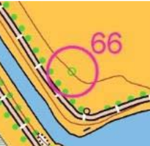
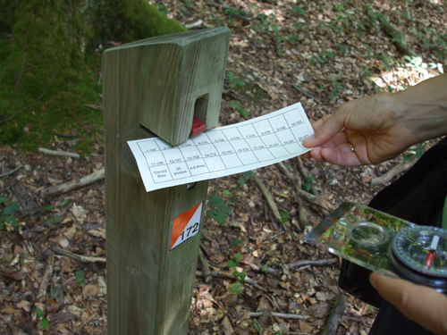
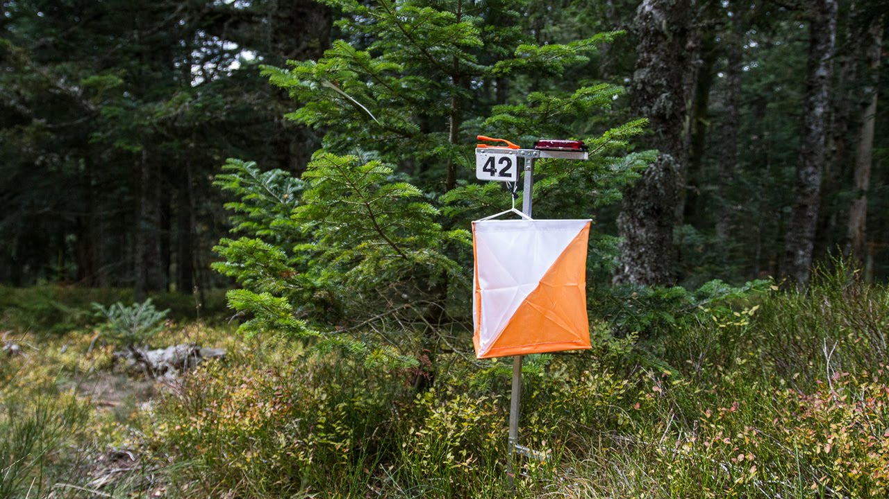
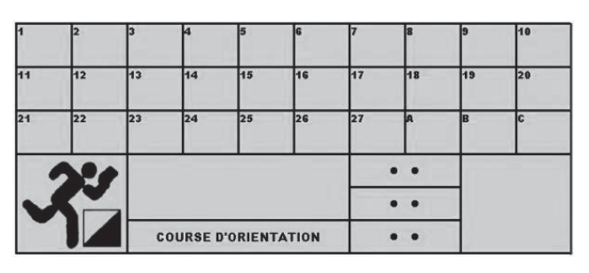
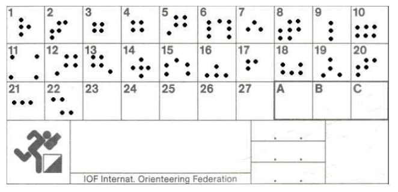

Comment pratiquer ?
La course d’orientation également appelée C.O. est née en Norvège en 1898, elle est pratiquée en France depuis 1970.
C’est une pratique sportive qui consiste à réaliser un parcours déterminé avec des passages obligés appelés postes de contrôle.
Ces postes de contrôle sont matérialisés par des bornes de poinçonnage en bois pour des postes permanents et en toile pour des temporaires. L’orienteur ou l’orienteuse est équipé d’une carte aux symboles adaptés et éventuellement d’une boussole, qui lui permettra de situer dans l’espace les éléments de recherche.
La carte
Les cartes sont aux normes de la Fédération Française de Course d’Orientation.

La Légende
Faites la relation carte-terrain en regardant la légende.
La légende est spécifique à la course d’orientation, ses couleurs sont différentes de celles des cartes de randonnée IGN.
Les codes couleurs de la carte
- Le noir : particularités dues à l’homme (chemins, bornes, bâtiments, lignes électriques...)
- Le jaune : espaces découverts (champs, clairières...)
- Le bleu : hydrographie (étangs, ruisseaux, marais, fontaines...)
- Le bistre : relief (courbes de niveau, butte, trou, fossé...)
- Le blanc et le vert : la pénétrabilité de la végétation, du blanc (100 % pénétrable, course facile) au vert foncé (végétation dense, course ralentie ou impossible).
Conseils pour la lecture d’un parcours
Le cercle simple symbolise le poste à trouver, il est accompagné d’un numéro qui correspond au numéro de la balise.
« Les lignes directrices » sont ce que je vais suivre : chemins, lisière...
« Les points d’appui » sont ce qui confirme mon itinéraire : bâtiments, virages...
« Les lignes d’arrêt » sont les lignes facilement identifiables qu’il ne faut pas dépasser (clôtures, routes...)
Les bornes de poinçonnage
Implantées sur le terrain, ces bornes sont les postes que doit retrouver l’orienteur. En bois pour des permanentes et en toile pour des temporaires, elles mesurent environ 90 cm de haut. Elles ont un code (numéro) permettant de vérifier que le poste trouvé correspond bien au poste recherché. Les bornes sont toutes munies d’une pince pour poinçonner les cases des cartons de contrôle. Chaque pince laisse une empreinte de poinçon différente.
 Le carton de contrôle
Il comporte les numéros des bornes à trouver. Il est donné à chaque participant, qui doit le poinçonner à chaque poste (borne de poinçonnage) de son circuit dans la case correspondante. Ils permettent de vérifier que l’équipe a trouvé les bons postes.
Le carton de vérification
Il s’agit du témoin, il permet de vérifier les cartons de contrôle.
La boussole
La boussole n’est pas indispensable pour les premiers niveaux, en effet les débutants seront concentrés sur cet outil au lieu de chercher à faire la relation entre la carte et le terrain. La boussole deviendra indispensable pour la technique de l’azimut (trace directe), ou pour orienter sa carte en l’absence d’éléments remarquables.
Conseils pratiques
Pour une meilleure lecture, tenez votre carte de manière horizontale.
Avant de partir, situez-vous sur la carte et examinez l’endroit où vous devez vous rendre.
Identifiez sur la carte les repères successifs qui vous aideront à élaborer votre itinéraire pour rejoindre la première borne et les suivantes.
Aussi lorsque vous tournez à droite où à gauche n’oubliez pas de garder votre carte orientée !
Soyez écoresponsable, respectez les lieux et veillez à ne pas laisser de déchets sur votre passage !
Portez de bonnes chaussures !
Couvrez-vous les jambes car vous pouvez rencontrer des branches, des ronces ou des buissons épineux !
Emportez de quoi vous hydrater !
Le chemin le plus rapide n’est pas toujours la ligne droite !
Et surtout, amusez-vous !
Rejoignez-nous !
Vous souhaitez essayer et découvrir cette pratique ?
Alors participez à un de nos entraînement ou lors d'un de nos stages !
Prochains évènements
Dimanche 01 mars 2020
Entraînement
Forêt de La Coubre
de 9h à 11h45
EntraînementWeek-end du 21 et 22 mars 2020
Course Moyenne et Longue Distance
Forêt de la Coubre
Samedi : Moyenne Distance
Dimanche : Longue Distance
CompétitionWeek-end du 28 et 29 mars 2020
Stage CO
Samedi : Saint-Augustin
Hébergement : Boyardville
Dimanche : Forêt des Saumonards
StageNous suivre